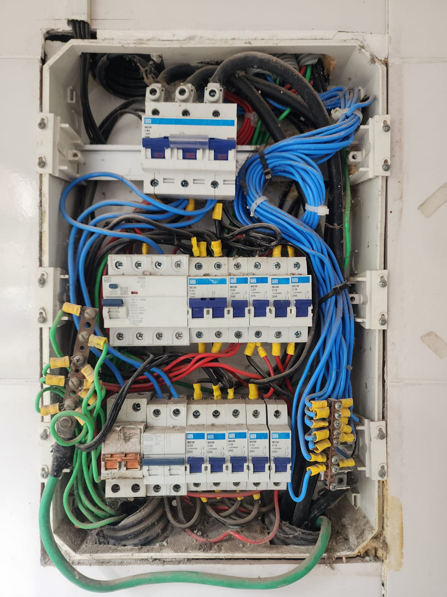
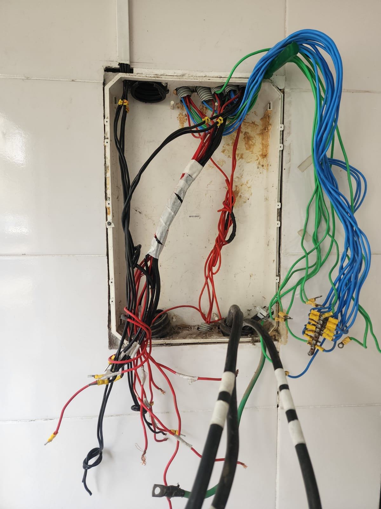
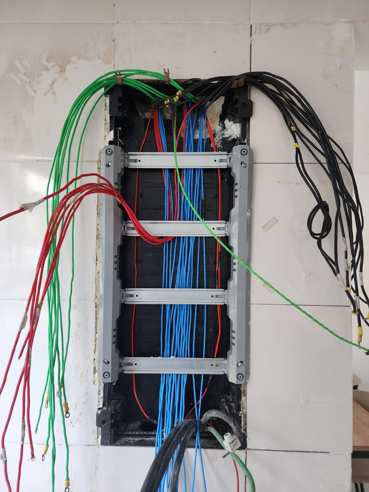
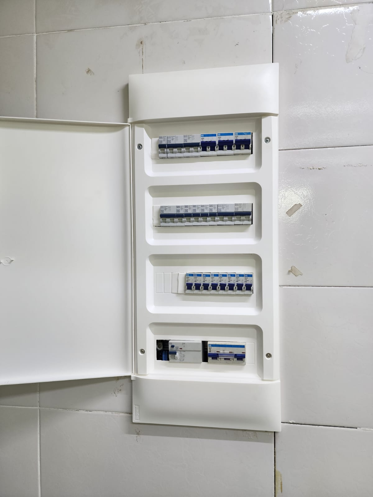
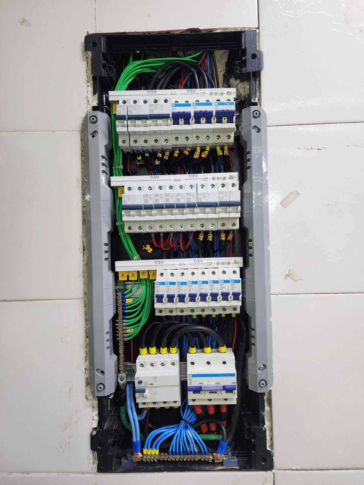

Abaixo alguns dos trabalhos reais executados pelo Grupo Ubaranas em montagem, reforma e organização de quadros elétricos.





Reorganização completa de quadro elétrico com padronização de circuitos, melhoria de segurança, identificação e adequação técnica.
Seguimos um processo técnico estruturado para garantir segurança, organização e qualidade em cada serviço executado.
Realizamos uma análise completa da instalação elétrica, identificando riscos, falhas e oportunidades de melhoria.
Avaliamos cargas, conexões, aquecimento e organização dos circuitos para entender o cenário real da instalação.
Definimos o escopo do serviço, materiais necessários e a melhor estratégia de execução com foco em segurança e eficiência.
Realizamos a montagem, reorganização ou correção do sistema elétrico com padrão profissional e boas práticas da NBR 5410.
Executamos testes elétricos para garantir funcionamento correto, segurança e estabilidade do sistema.
Entregamos o sistema organizado, identificado e pronto para operação com segurança e confiabilidade.
Trabalhamos com foco em segurança, precisão técnica e conformidade com normas para garantir qualidade e confiabilidade em cada serviço.
Todas as instalações seguem normas técnicas de segurança elétrica, garantindo confiabilidade e redução de riscos.
Utilizamos análise térmica para identificar pontos de aquecimento, falhas ocultas e riscos de curto-circuito.
Padronização de quadros elétricos com identificação clara de circuitos e melhor distribuição de cargas.
Serviços realizados com foco em qualidade técnica, não apenas instalação básica.
Correção de falhas que evitam aquecimento, quedas de energia e riscos de incêndio.
Atuação prática em quadros elétricos, racks, infraestrutura e sistemas de baixa tensão.
Pequenas falhas em instalações elétricas podem gerar grandes prejuízos, desde queima de equipamentos até risco de incêndio.
Nossa equipe realiza análise técnica completa, identificação de falhas e reorganização de quadros elétricos com padrão profissional.
Resposta rápida via WhatsApp